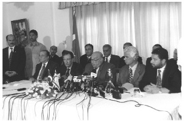

1997’nin temmuz ayında, Dışişleri Bakanı olarak ilk kez Kuzey Kıbrıs Türk Cumhuriyeti’ni ziyaret ederken, yılların bıraktığı anılarla ve yıllardır oluşturduğum düşüncelerle birlikte uçaktan inmekteydim. Kıbrıs, iki toplumun ortaklaşa benimseyeceği ortak bir çözüme kavuşmalıydı. Bu yönde her tür gayret gösterilmeliydi. (1997 Temmuzu’nda, ‘iki toplumlu, iki bölgeli federasyon’ tanımı, bizim resmi tezimizdi. Bir yıl kadar sonra, ‘konfederasyon çözümünü’ gündeme getirdik. Daha sonra, ‘iki toplum’ deyimini bırakıp, ‘Kıbrıs’taki iki millet’ tanımını kullanmaya başlayan ilk Türk Dışişleri Bakanı oldum. 1997’de ‘Federasyona’ şiddetle karşı çıkan Yunan-Rum tarafı, bizim konfederasyon tezini geliştirmemizin ardından, ‘federasyonu’, ‘federal çözümü’ kendi anlayışları olarak konuşmaya başladı.)
a) kktc ile Çalışmalar
Ortak çözüm, içtenlikle savunduğumuz amaçtı. Ne var ki, belki de asla ulaşılamayacak bir hedefe varmayı beklerken, tabii ki hareketsiz kalıp mesafe kaybedemezdik. Kıbrıs siyasetini iki boyutlu öngörmüştüm: Bir yandan, ortak çözüm için elimizden gelen her şeyi yapmak; öte yandan, bu çözümün hiç gelmeyeceği varsayımıyla, bağımsız kktc’nin tek başına yaşayabilmesi için gerekenleri eksiksiz yerine getirmek. İlk boyutta, bütün ortak çözüm girişimlerinde yer almak, bu amaçla düşünce üretmek, uzlaşmayı desteklemek; ikinci boyutta, kktc’nin yaşama hakkını bütün uluslararası platformlarda savunmak, tek başına ayakta duran bir siyasal yapıya kktc’yi kavuşturmak. Çok özet olarak, 1997-2002 yıllarında Türk Dışişleri Bakanlığı’nın Kıbrıs siyaseti bu şekilde öngörüldü ve sürdürüldü.
kktc’nin Ercan Havaalanı’nda, yoğun sevgi gösterileriyle ve kktc Başbakanı ile Dışişleri Bakanı tarafından karşılandık. Şeref salonunda basının sorularını cevapladık. Ben, Kıbrıs siyasetimizin iki boyutunu anlattım. Bizim için kktc’nin bir devlet olduğunu, ortak çözüme ulaşılmazsa kktc’nin sürekliliğinin Türkiye’nin güvencesinde olduğunu kesin ifadelerle belirttim. kktc’nin devlet kimliğini, ancak bu ‘devlet’ gerçeğinin kabulüyle ortak çözümün öngörüleceğini özenle vurguladım; devlet olgusunu en öne çıkarttım.
Havaalanındaki bu açıklamamdan hemen sonra, Cumhurbaşkanı Denktaş’la görüştük. Denktaş, konuşmamdaki ‘devlet vurgusuna’ özellikle teşekkür etti. kktc’nin devlet niteliğinin bir Türk Dışişleri Bakanı’nca ilk kez bu kadar güçlü ve kararlı biçimde anlatıldığını belirtti. Bundan duyduğu memnuniyeti dile getirdi.
Türkiye’den çok sayıda devlet adamı, bakan, siyasetçi, kktc’yi, onun cumhurbaşkanını ziyaret eder. Sayın Denktaş’ın, belli bir ‘ağırlama-görüşme’ düzeni olduğunu, bunu özenle sürdürdüğünü ben de zamanla gördüm. Söz konusu uygulamanın ilk bölümü, hiç değişmez. İkinci bölüm ise, tartışılan konuların önemine göre, gerçekleşir ya da gerçekleşmez. Değişmeyen ilk bölümde, Denktaş, Cumhurbaşkanlığı çalışma konutunda misafirini karşılar. Büyük görüşme odasına geçilir. Orada, iki heyet başkanı koltuklara oturur, heyetler yanlarına dizilir. Bir-iki saat süren görüşmeden sonra, Denktaş, misafir heyete aynı binada bir öğlen yemeği verir. Ve bu geniş katılımlı ilk bölüm tamamlanır. Bu öğlen yemeklerinde, Cumhurbaşkanı Denktaş, muhalefet partilerinin liderlerini de davet ederdi. Böylece, onların görüşlerini de bir ölçüde almak mümkün olurdu.
Beş yıllık yakın ortak çalışmalarımız boyunca, ‘ikinci bölümü’ hemen her ziyaretimde yaşadım. Bu, akşam saatlerinde ya da ertesi günün sabahında, Denktaş’ın evinde gerçekleşirdi. Denktaş, bazen kktc’nin ilgili yöneticilerini de yanına alarak, benimle ve heyetimizin bazı üyeleriyle bir araya gelirdi. Dar katılımlı bu toplantılar, ‘gayrıresmi’ olurdu. Ama yeni düşünceler burada filizlenir, önemli kararlar, sohbet özelliğindeki bu görüşmelerde şekillenirdi. Geceyi Kıbrıs’ta geçirmemiz durumunda, Denktaş’la ve kktc’nin siyaset-ekonomi çevreleriyle akşam yemekleri, ziyaret programlarının son bölümünü oluştururdu.
1997 Temmuzu’ndaki ilk görüşme, ‘ilk bölümle’ başladı. Başbakan Eroğlu’yla beraber, havaalanından Cumhurbaşkanı konutuna gittik. Denktaş bizi kapıda karşıladı. Heyetlerle birlikte büyük salona geçildi. Önce hal hatır soruldu, biraz sohbet edildi, ardından, beş yıl boyunca sık sık tekrarlanacağı üzere, Kıbrıs’ın sorunlarına, çözüm arayışlarına geçildi.
b) İlk Toplantı
Türkiye’nin ve kktc’nin temsilcileri niteliğimizle Denktaş’la yaptığımız bu ilk toplantıda, birbirimizi anlamaya, biraz da tartmaya çalıştığımızı hatırlıyorum. Gerçi birbirimizi hem insan hem siyasetçi olarak biliyorduk ama, daha iyi anlamaya ve tanımaya ihtiyacımız vardı. Denktaş’la ilk kez 1975’te, Kıbrıs Harekâtı sonrasında, nisan ayında bir araya gelmiştik. Kıbrıs Türk Kesimi’nde televizyon yayını başlatmak için trt olarak zamanla yarışıyorduk. Teknik imkânsızlıklarla boğuşmaktaydık. Türkiye’de Irmak hükümetinin son günleriydi. Beni görevden almaya ‘yeminli’ mc hükümeti (Milliyetçi Cephe) kurulmak üzereydi. Ayrılmadan son projemi de tamamlamak amacındaydım. ‘Bayrak Televizyonu’nun ilk yayınını Denktaş’la beraber gerçekleştirdik. Kıbrıs’ın geleceğini konuştuk. Sonraki yıllarda da birkaç kez birlikte olduk. Kararlılığıyla, konusuna hâkimiyetiyle ve siyasetçiliğiyle çevresini etkileyen, ilişkilerinde insan boyutunu da göz ardı etmeyen bir kişilik olarak tanımıştım.
Şimdi, Türkiye’nin ve kktc’nin politikalarını Denktaş’la birlikte oluşturacaktık. Denktaş’ın, Türkiye’nin siyasetçilerine biraz da ihtiyatla yaklaştığını biliyordum. Geçmişteki ilişkilerinde hayal kırıklığına da uğramıştı. Bunların kaynağında eski bir olayın yattığı, Denktaş’ın ihtiyatlı tavrının bu tarihte oluşup zaman içinde bazen başka deneylerden de güç aldığı söylenir. 10 Mart 1964’te, ‘Kıbrıs hükümetinin ada halkının tümünü temsil ettiğine’ ilişkin bir Birleşmiş Milletler kararını (Karar No. 186), Türkiye, Denktaş’ın tüm itirazına rağmen benimsemiş, onaylamıştı. Denktaş, günümüzde yaşanan sıkıntıların kaynağında bu bm kararının Türkiye tarafından onaylanmasını görürdü. Bunu kendisinden hiç duymadım, bu konuya atıfta bile bulunmadı. Ama olayı ve Denktaş’ın tutumunu biliyorum.
Denktaş’la aramızda karşılıklı güvene dayalı bir ilişki kısa sürede oluştu ve hep sürdü. Birbirimizin söylediğine güvenirdik. İkimiz de, bazen farklı görüşlerimiz olmasına rağmen, ortak yararı ve ortak çizgiyi her zaman bulabildik. Buna ulaşmamızda, insan boyutundaki benzerliklerimizin, ortak ilgi alanlarımızın da payı oldu. Bir defa, ikimiz de ‘iflah olmaz’ birer fotoğraf meraklısıydık. Hele Denktaş, sadece fotoğrafa değil, aynı zamanda fotoğraf makinesine düşkündü. Ne zaman adaya gitsem, yeni bir makineyi bana gösterir, onunla fotoğraflar çeker, resimleri bana gönderirdi. Bakanlığım sonrasındaki bir New York ziyaretimde ünlü bir fotoğraf mağazasına gitmiştim. Türk olduğum anlaşılınca müthiş bir itibar gördüm. Meğer Denktaş oradan alışveriş yaparmış ve en muteber müşterileri arasındaymış... Denktaş’la bir başka ortak yanımız, hayvan sevgisi, özellikle kanaryalara ve muhabbet kuşlarına merakımızdı. Bu konu özel gündemimizden eksik olmazdı. Denktaş’ın evinin bahçesinde, küçük kuş cenneti denebilecek bir mekân vardır, çeşit çeşit kuşların barındığı. Her ziyaretimde, önce beni farklı türlere ayrılmış bölmelerin önünde dolaştırırdı. Merakımı bildiği için, hangi kanaryanın hangi dönemin yavrusu olduğunu, geçen gelişimde hasta olanın şimdi iyileştiğini, uzun uzun anlatırdı. Ben de ilgiyle, keyifle dinlerdim.
c) Denktaş’la Siyaset
Kıbrıs’ı, kktc’yi, Kıbrıs siyasetini kavramak için, Denktaş’ı anlayabilmek gerekir. Denktaş, müthiş bir siyasetçidir. Bir başka siyaset ustasını, Süleyman Demirel’i çağrıştıran özellikleri vardır. Denktaş’ın siyasetçi kimliğine hep saygı duydum. Ciddi bir siyaset ustasıyla yakın çalışmak hem ilişkileri kolaylaştıran bir etkendi, hem de, bir siyasetçi olarak benim için öğreticiydi. Denktaş, güç dengelerini büyük bir maharetle okur. Dengelerdeki diğer kurumlarla ve oyuncularla ilişkilerini çok sağlam tutar. Gerektiğinde bu oyunculardan yararlanır.
Kıbrıs konusundaki olağanüstü deneyimi ve bilgisi, üstün sezgisi ve zekâsı, Denktaş’la birlikte çalışmaya aynı zamanda bir keyif özelliği veriyordu. Tartışmaların özüne hemen girivermesi, gereksiz laflarla zaman kaybetmemesi, olayları doğru okuması, kendi ulaşmak istediği noktaya varabilmek için her şeyi zihninde aşamalarla planlaması, bunu taktiklere dönüştürmesi, hem kararlı hem esnek olabilmesi, siyaset hünerinin başlıca bir koşulu olan ‘zamanlamayı’ çok dikkatle değerlendirmesi, ‘siyasetçi’ Denktaş’ın özellikleriydi.
Burada, Denktaş’ın Kıbrıs idealine ve Denktaş’ın dünyadaki –hattâ kısmen Türkiye’deki– algılanışına değinmek istiyorum. Tabii, bunlar sadece benim yorumum; Sayın Denktaş’ı elbette ilzam etmez: Denktaş’ın ideali, Denktaş’ın Kıbrıs ve kktc için ideal çözümü, kktc’nin Türkiye’ye katılmasıdır; Türkiye’nin bir vilayeti olmasıdır. Bunda en küçük bir şüphem yok. Yani, benim savunduğum ‘Kıbrıs’taki iki milletin, kendi ayrı ve sürekli devletleri aracılığıyla birlikte oluşturacağı, ortak, konfederal devlet’ yaklaşımı, Denktaş’ın önceliği değildir, gönlündeki çözüm değildir.
Tahlilimi biraz daha ‘zor anlaşılır’ kılmak için hemen ekleyeyim: Denktaş, ‘gönlündeki çözüm olmayan’ iki kurucu devletli ortak devlet modeline, Kıbrıs’taki iki milletin ortak kabulüne dayalı ortak çözüme en büyük katkıları yapmış bir liderdir. Bunları anlatmadan önce, çelişkili görünümün nedenlerine değinmek istiyorum:
Denktaş, zaten kolay gerçekleşmeyecek kendi uzak idealini izlemek uğruna, Türkiye’nin yakın yararlarına zarar vermek istemez. Yani, ‘kktc’nin Türkiye’ye katılması’ gibi zor ve uzun vadeli bir hesap uğruna, Türkiye’nin dünya ile, Avrupa Birliği ile ilişkilerini bozmaz, hattâ zorlaştırmaz. Türkiye’ye zarar verebilecek davranışlardan özenle kaçınır. Buna karşılık, benim ifade ettiğim çözüm şeklinin de (konfederasyon) bir çözüm olabileceğine inandığı için, onu desteklemiştir.
Nihayet, belirttiğim gibi, Denktaş, usta bir siyasetçidir. Siyasetin, ‘... olması gerekene dönük durmak, olabilecek olanı gerçekleştirmek’ kuralını bilir. İlk tercihi olamıyorsa, kabul edilebilir ikinci tercihe yönelir. Yani, Türkiye ile kktc’nin bütünleşmesi öncelikli tercihidir ama, bu olamıyor diye Denktaş tabii ki küsüp köşesine çekilmemiştir. Kıbrıs’taki iki milletin birlikte üretecekleri ortak çözümün arayışını kolaylaştırmış, gerçekleşmesi için en stratejik adımları atabilmiştir. ab ile uzlaşma arayışını da içeren ‘konfederasyon modelini’ ortaya koyması (1998) ya da Klerides’e ‘önkoşulsuz ikili görüşmeleri’ önerip, gerçekleştirmesi gibi (2000-2001).
Ben bunları özellikle yabancı muhataplara anlattım. O çok sıradan ‘... Denktaş çözümün engeli; Denktaş oldukça Kıbrıs’ta çözüm olmaz’ söyleminin sahipleriyle tartıştım. ‘Denktaş, engel değil, olabilecek bir ortak çözümün unsurudur’ dedim. Şartlanma o kadar güçlü ki, ancak bazıları üzerinde ve belirli ölçüde ikna edici olabildim. Ama tahlilimde ve görüşümde ısrarlıyım. Çünkü, masa başı değerlendirmesinin değil, birlikte yaşanmış somut olayların sonucunda bu tahlili yaptım, bu görüşe vardım. Denktaş’ın ‘Annan Planı’na ve bunun halk oylamasına yönelik olumsuz tavrı, Denktaş’a göre ‘adil ve kalıcı bir ortak çözüme’ değil, ‘adaletsiz, tehlikeli ve zorla kabul ettirilmiş bir çözüme karşı’ gelişmişti.
d) Ecevit’le Siyaset
Kıbrıs, Başbakan Ecevit’in de anlaşılır nedenlerle ‘özel’ konusuydu. Denktaş’ınkine benzer bir yaklaşım içindeydi. Gene sadece beni ilzam eden tahlilime göre, onun da öncelikli tercihi, sanırım kktc’nin Türkiye’ye katılmasıydı. Ama bunun zorluğunu biliyordu. Mümkün olanın gerçekleşmesini, güvenli ve sürekli bir kktc’yi sağlayacak ortak çözümü o da istemekteydi. Denktaş’ın görüşlerine çok değer verirdi. Dışişleri olarak önerdiğimiz yeni politikaları dinlerken, ‘... Sayın Denktaş benimser mi?’ diye sorardı. Çoğunu, Denktaş’la birlikte oluşturduğumuzu söylediğimizde, rahatladığını hissederdik. Ecevit, bizim önerdiğimiz ve izlediğimiz Kıbrıs siyasetine her zaman destek verdi. Zaten bu konudaki önemli kararları kendisine danışmadan almazdık. Bize güvendiği için pek karışmazdı, ancak çok yerinde önerileri, katkıları olurdu.
Ecevit’le yakınlığımız, çok eskilerden başlar. 1964’te, Cumhuriyet gazetesinin yazı işleri yönetimindeydim. O dönemde aynı gazetenin dış haberlerini yapan, yorumlar yazan Mehmet Barlas’la ve eşimle birlikte, Dr. Gürbüz Barlas’ın evinde yemekteydik. Kapı çalındı ve Ecevit eşiyle beraber Dr. Barlas’ı ziyarete geldi. İlk kez karşılaşıyorduk. O gece özellikle azgelişmiş ülkelerde solun işlevi ve konumu üzerine konuşulduğunu hatırlıyorum. Ecevit’le tanışlığımız, 1970’lerin başında yakınlığa dönüştü. Ecevit, chp’nin yenileşmesi için, chp’nin kendi geçmişini, kendi politikalarını sorgulaması ihtiyacını vurguluyordu. Turan Güneş’in de katkılarıyla, ‘seçkincilik’, ‘halktan kopukluk’ gibi konular gündeme getirilmekteydi. ‘Demokratik sol’ kavramı geliştiriliyordu. Bunlar, benim de üzerinde çalıştığım, yazdığım, çoğunu paylaştığım düşüncelerdi. 1970’te yayımlanan ilk kitabım Türkiye’de Geri Kalmışlığın Tarihi’ni Ecevit beğenmişti, ondan sitayişle söz ediyor, bazı görüşlerinin oluşumunda kitabımdan etkilendiğini söylüyordu. O dönemde Milliyet’te günlük yorum yazıyordum. chp bir yol ayrımına gelmekteydi. 12 Mart Muhtırası, chp’yi böldü. Ecevit, Genel Sekreterlik’ten istifa etti. 1972 Kurultayı’nda zaferle sonuçlanacak mücadelesini başlattı. O günlerde, Ecevit hareketine yazılarımla büyük destek verdim. Ecevit’le zaman zaman görüşüyorduk, İstanbul’a hemen her gelişinde beraber oluyorduk. chp’nin kaderini değiştiren 1972 Kurultayı’ndan birkaç gün önce beni Ankara’ya çağırarak, Kurultay’da yapacağı konuşmanın taslak metnini vermiş, bazı önerilerimi konuşmasına eklemişti.
Bu yakınlığımız, ilginçtir, 1974 Ecevit hükümetinin oluşup da beni trt Genel Müdürlüğü’ne atamasından sonra değişti. trt Genel Müdürlüğü önerisini Ecevit’in büyük ısrarıyla kabul ettim. Genel müdür olarak onun desteğini hep aldım, Kıbrıs Harekâtı gibi kritik günlerde benim görüşlerimi, değerlendirmemi hep önemsedi. Ancak, atama sonrasında aramızda bazı şeyler değişmişti. Belki doğal olanı buydu da, eski dostluğumuz, sanki, ‘amir-memur’ sıfatlarının öne çıktığı ‘bürokratik’ bir ilişkiye dönüşmekteydi. Geçmişteki yakınlığın yerini, şimdi, ‘sayın’ların çoğaldığı ‘mekanik’ bir ilişki almaktaydı. Tabii, Ecevit’in yaklaşımına saygı duydum, ben de aynı çerçevede ve ölçülü davrandım. Ama bu yeni tarzı sevdiğimi söyleyemem. O günlerden sonrası, mesafeli bir ‘siyasal ilişki’ özelliğiyle gelişti. İnsani olmaktan çok, öncelikle siyasi olan ilişkilerin mekanik nezaketi ve kaçınılmaz uzaklığı içinde... trt sonrasının (1975) hukuk mücadelesinde, Ecevit’in ısrarıyla sürdürdüğüm ‘genel müdürlük’ iddiasında, 1980’lerin bunalımlı yıllarında, ardından, Kayseri’den beni aday göstermesinde, 1995-1997 tbmm çalışmalarında, bakanlığım döneminde, aynı ölçülü ve saygılı özellikler ilişkilerimizde geçerli kaldı.
Başbakan ve Dışişleri Bakanı olarak, Ecevit’le ‘mükemmel’ denebilecek profesyonel bir beraberliğimiz oldu. 1997 koalisyonu kurulurken, Ecevit’in beni Dışişleri Bakanı değil, Kültür Bakanı olarak öngördüğünü, kendi dışındaki etkenler sonucunda beni Dışişleri Bakanı yaptığını daha önce belirtmiştim. Zaten bunları bana kendisi anlattı. Atama sonrasında ise, saygılı, profesyonel, siyasal bir çalışma ilişkimiz oluştu. 1997 sonrasında iki kez hükümet değişikliği yaptığında da, Ecevit, Bakanlığımı sürdürmemi istedi. Şimdi geriye baktığımda, ilk tanıştığımızdan bu yana neredeyse kırk yılın geçtiğini görmekteyim... Gerçekten, Ecevit, benim meslek hayatımın, siyasal mücadelemin birçok kesitinde önemli bir faktör oldu. Ben, kendisini, öncelikle, Türkiye’de sol anlayışları kitlelere yayan, benimseten lider olarak saydım ve destekledim. Bugün bile, siyasal ilkelerimizin, hedeflerimizin değil, hedefe uzanan yollarımızın ayrıldığını düşünürüm...
e) Ortaklık Konseyi Kuruluyor
Tekrar Kıbrıs’a dönersek, 1997-2002 döneminde izlediğimiz Kıbrıs siyaseti, şu düşünsel çerçevede oluştu: Bir ilhak-iltihak yaklaşımının gerçekçiliğin çok uzağına düştüğünü biliyordum. Sanırım Denktaş da biliyordu, Ecevit de. Dolayısıyla, doğru siyasetin hedefi, kktc’nin sürekliliğini ve Türkiye’nin yararlarını güvence altında tutan, iki devletli bir konfederasyon modeli esasında ortak çözüm olmalıydı. Burada benim, bazılarından ayrıldığım nokta şuydu: Kendimizi, ortak çözümün bulunamayacağı ihtimaline göre de hazırlamalıydık. Ortak çözümü arıyoruz, ortak çözümü bulacağız diye, Kıbrıs’taki siyasal, askeri ve ekonomik konumumuzu zaafa uğratmamalıydık, tam aksine, güçlendirmeliydik. Olumsuz gelişmelere karşı hazırlığı biz ne ölçüde başarırsak, Kıbrıs’taki iki milletin ortak çözüme yaklaşmalarını kolaylaştıracağımızı bilmeliydik. 1997-2002 döneminin Kıbrıs’a ilişkin bütün siyasetinde, açıklamalarında, adımlarında, kozlarımızı elimizde tutmanın, bunları muhataplara hatırlatmanın, olumsuzluğa karşı hazırlıklı olmanın bilinci vardır.
Bu bağlamdaki ilk girişimimiz (Ağustos 1997), Türkiye ve kktc arasında bir ‘Ortaklık Konseyi’ kurmak olmuştu. Amacım, iki boyutluydu: Bir yandan, Türkiye’de dış siyasetin artık yeni bir anlayışla oluşacağını, kararlılığın öne çıktığını dışımızdakilere hissettirmek istiyordum. Öte yandan, Türkiye-kktc ilişkilerini, Yunanistan ile Güney Kıbrıs Rum Yönetimi arasındaki ilişkiler ve anlaşmalar düzeyine yükseltmenin ihtiyacı vardı. Maalesef geçmişte çok zaman kaybedilmiş ve geride kalınmıştı. Ortaklık Konseyi’ni, diğer ülkelere şu şekilde anlatmaktaydık:
1) Türkiye Cumhuriyeti hükümeti ile Kuzey Kıbrıs Türk Cumhuriyeti hükümeti arasında imzalanan ‘Ortaklık Konseyi Anlaşması’, KKTC’nin hedef olabileceği yeni ve büyük haksızlıklara karşı Türkiye’nin güvencesini KKTC’ye getirmiştir.
2) ‘Ortaklık Konseyi Anlaşması’, Kıbrıs Türk ve Rum toplumlarının arasındaki görüşmelerin bir alternatifi olarak öngörülmemiştir. Türkiye, toplumlararası görüşmeleri desteklemektedir. ‘Ortaklık Konseyi Anlaşması’nın, toplumlararası görüşmeleri zorlaştırması yahut engellemesi söz konusu değildir.
3) Güney Kıbrıs Rum Yönetimi, Kıbrıs’a ilişkin uluslararası anlaşmaları ve Birleşmiş Milletler Fikirler Dizisi’ni yok sayan bir siyaset izlemektedir. Güney Kıbrıs Rum Yönetimi, Birleşmiş Milletler’in açık ve ısrarlı kararlarına rağmen, Kıbrıs Türk toplumunun siyasal eşitliğini reddetmektedir; 1960 anlaşmasını çiğneyerek, Türkiye’nin üye olmadığı bir uluslararası kuruluşa katılma sürecini başlatmıştır. Avrupa Birliği ise, sadece Güney Kıbrıs yönetiminden kaynaklanan yetkisiz bir üyelik talebini, adanın tümü için geçerli saydığını açıklamıştır. Bütün bu nedenlerle, KKTC’nin desteklediği ve sürdürdüğü toplumlararası görüşmelerin sonuçsuz kalması kuvvetle muhtemeldir.

İsmail Cem ile Rauf Denktaş’ın basın toplantısı.
4) Güney Kıbrıs Rum Yönetimi’nin, Kıbrıs Türk toplumunun onaylamadığı ve katılmadığı bir süreci başlattığı ortadadır. Kıbrıs Türk toplumunu peşinden sürükleyerek ve bir azınlık statüsüyle onu Rum egemenliği altına sokmak istediği açıktır. Güney Kıbrıs Rum Yönetimi’nin hesabı budur; bu hesabın adımları atılmıştır.
5) Uluslararası anlaşmalara aykırı ve dayatmacı bu sürecin, haksız, sorumsuz ve tehlikeli sonuçlarının gerçekleşmesini, KKTC’nin hareketsiz ve çaresiz bekleyeceği elbette düşünülemez. ‘Ortaklık Konseyi Anlaşması’, bir bakıma, Kıbrıs Türk toplumunun meşru kendini koruma hakkının hayata geçirilmesidir; bir meşru müdafaa mekanizmasıdır. Kıbrıs Türk toplumunun, 1960’lardaki ve 1970’lerin başındaki gibi esarete mahkûm bir azınlık olmayacağının, kendisi dışında oluşmuş sözde çözümleri kabullenmeyeceğinin ilanıdır. Dayatılmış çerçevelere, güvensizliğe, Bosnalı Müslümanlarınkine benzer bir soykırım ihtimaline Kıbrıs Türk toplumu mahkûm değildir. KKTC’nin önünde başka çözümler de vardır; ‘Ortaklık Konseyi Anlaşması’, bu çözümlerin yolunu açmaktadır.